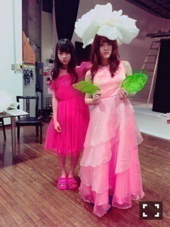

| 2016/01 07 Thu | なんかいい。689回目 |
発売中のMdN連載のお相手は
青木むすびさん！
大好きなH.P.DECOでの撮影(´* >*｀)
ずっとお話を聞きたかった方！
多方面で幅広く活動されています。
私が主に惹かれるのは、バイヤー。
昔から憧れてた宝石箱みたいなお店は、
むすびさんが買い付けてきたものばかり！
今いちばんやりたいこととなった時に
え！そこなんだ？！みたいな
突拍子もない感じ、素敵だった！
多趣味で飽き性であることは
自分にとってプラスなのかもしれない。
まだまだ冒険できる。

ところで、連載なんと1ページ増です。
今月号から？になりそうです（≧∇≦）
写真も文もうきうきうきうき。
神社も素敵、うきうき。
今日次号の取材しましたが、
未だかつてない対談となりました。
お花だよ
日経エンタテインメント！
初森ベマーズのプロデューサーの
濱谷さんから嬉しいお言葉を頂きました。
今年がんばります
冬休み、さゆ家のこたつで鍋会して
そのまま泊りしました。
さゆが帰ってくる前に
お先におじゃまして日芽香と鍋を作って
遅いけど誕生日ケーキの
サプライズしたりした。
買い出しから楽しかったわね。
あと、ほぼ寝なかった、最高∠( 'ω')／

乃木神社おみくじ、中吉だった∠( 'ω')／
まりか
コメント(341)
2016/01/07 20:06